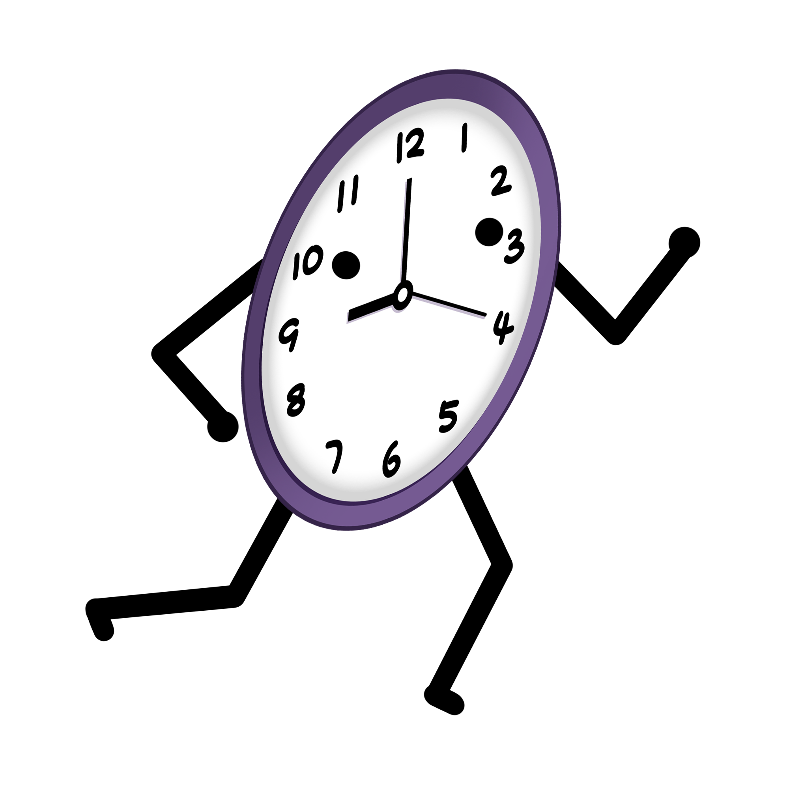
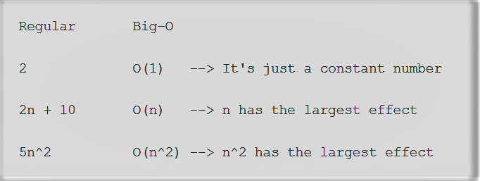
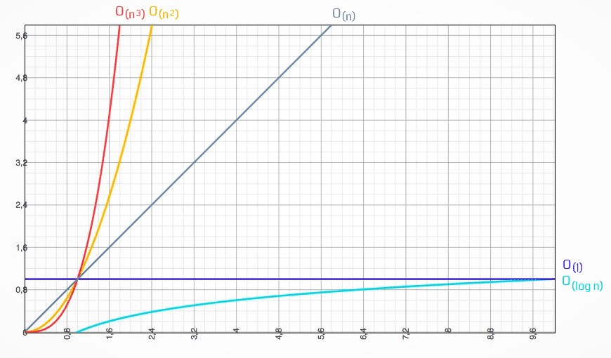
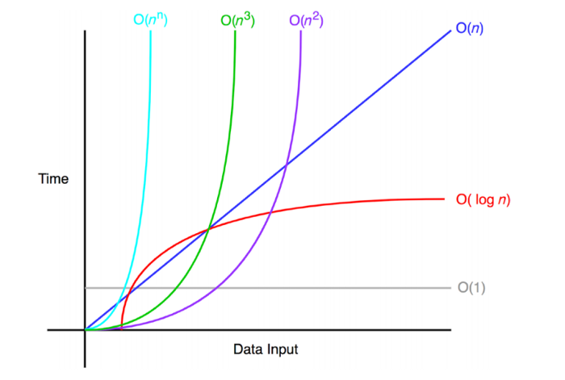

Definisi BIG O
Suatu baris kode yang kita ciptakan dapat dilihat kinerja dan keefektivannya dalam memecahkan masalah yang ingin kita pecahkan, maka kita butuh sebuah metodologi untuk menghitungnya. metodologi untuk menghitungnya yaitu dengan notasi O besar atau Big-O Notation.
Apa itu Notasi Big-O?
Notasi Big O (Big-O Notation) adalah cara untuk mengkonversi keseluruhan langkah-langkah suatu algoritma kedalam bentuk Aljabar, yaitu dengan menghiraukan konstanta yang lebih kecil dan koefisien yang tidak berdampak besar terhadap keseluruhan kompleksitas permasalahan yang diselesaikan oleh algoritma tersebut.

Setiap programmer yang baik akan menggunakan cara yang paling efektif dan efisien dalam menyelesaikan suatu permasalahan. Dan untuk bisa melakukan hal tersebut, kita harus bisa meminimalisir kompleksitas dari algoritma yang kita gunakan.
Kompleksitas suatu algoritma dibagi menjadi 2, yaitu Time Complexity dan Space Complexity. Adapun penjelasannya sebagai berikut:
- Time Complexity adalah seberapa lama waktu yang diperlukan untuk menjalankan suatu algoritma. Time Complexity Analysis adalah suatu cara sederhana untuk mengetahui berapa lama waktu yang dibutuhkan untuk menjalankan suatu algoritma dengan input tertentu (n).
- Space Complexity adalah seberapa besar memori yang kita gunakan untuk menjalankan suatu algoritma. Dan disini kita hanya akan membahas tentang Time Complexity.
Notasi O besar merupakan skenario terburuk dari sebuah algoritma, dan biasanya terdapat notasi n yang merepresentasikan jumlah masukan. Berikut adalah diagram notasi O besar dengan masukan yang dimulai dari 0 hingga tak terhingga.


Kegunaan Notasi BIG O
Notasi Big-O digunakan untuk mengukur tingkat kompleksitas suatu algoritma demi mengefisienkan algoritma itu sendiri. Notasi Big-O juga dapat merepresentasikan laju pertumbuhan (growth rate). selain daripada itu, Notasi Big-O juga berguna untuk membandingkan beberapa algoritma untuk masalah yang sama demi menentukan yang terbaik. contohnya seperti masalah pengurutan yang memiliki banyak metode/algoritma penyelesaian. Seperti pada:
- Selection sort, Insertion sort T(n) = O(n2)
- Quick sort T(n) = O (n log n)
karena n log n < n2 untuk n yang besar, maka algoritma quick sort lebih cepat (lebih baik) daripada algoritma selection sort ataupun insertion sort. Jadi, nantinya kompleksitas algoritma akan dinilai dengan Notasi Big O yang terdiri dari seberapa lama algoritma itu berjalan (time complexity), dan seberapa banyak memori yang akan dipakai oleh algoritma itu (space complexity). Dengan memahami Big-O Notation, kita akan lebih mudah dalam melihat mana algoritma yang lebih efisien yang bisa kita gunakan untuk menyelesaikan permasalahan yang sedang dihadapi.
Contoh Notasi Big O
Notasi Big O bisa dicontohkan seperti: O(1), O(N), O(N^2), O(N^3), O(sqrt(N)), O(log N), O(N log N), O(N!), O(2^N).

Untuk lebih jelasnya, dapat dilihat penjabaran beberapa macam contoh Notasi Big O, diantaranya yaitu:
CONSTANT TIME
Constant Time artinya banyaknya input yang diberikan kepada sebuah algoritma, tidak akan mempengaruhi waktu proses (runtime) dari algoritma tersebut, misalnya saja O(1). Kecepatan program yang diinginkan seorang programmer adalah O(1) yang maksudnya bagaimanapun kompleksnya suatu program kecepatannya tetap sama yaitu O(1). Jumlah input yang diberikan tidak akan mempengaruhi waktu proses (runtime) dari algoritma tersebut. Contoh:
Fungsi diatas memiliki time complexity O(1) dikarenakan ia hanya menjalankan sekali instruksi return, berapapun input yang dimasukkan kedalam fungsi.
LINEAR TIME
Linear Time adalah ketika runtime dari fungsi kita berbanding lurus dengan jumlah input yang diberikan, yaitu O(n). Adapun contoh programnya yaitu:
Fungsi diatas memiliki time complexity O(n) dikarenakan ia akan menjalankan looping untuk menjumlahkan bilangan-bilangan yang ada didalam array. Jumlah loopingnya bergantung pada panjang array yang dimasukkan kedalam fungsi.
LOGARITHMIC TIME
Logarithmic Time artinya ketika kita memberikan input sebesar n terhadap sebuah fungsi, jumlah tahapan yang dilakukan oleh fungsi tersebut berkurang berdasarkan suatu faktor, yaitu O(log n). Salah satu contohnya adalah algoritma binary search. Contoh programnya yaitu:
QUADRATIC TIME
Quadratic Time adalah ketika runtime dari fungsi kita adalah sebesar n², dimana n adalah jumlah input dari fungsi tersebut, yaitu O(n²). Hal tersebut bisa terjadi karena kita menjalankan fungsi linear didalam fungsi linear (n*n). Adapun contoh programnya yaitu:
Ketika i = 1 maka akan dijalankan 1 kali, ketika i = 2 maka akan dijalankan 2 kali, ketika i = 3 maka akan dijalankan 3 kali dan seterusnya… Sehingga, count++; akan dijalankan sebanyak (n² + n)/2. Maka time complexity-nya O(n²).
EXPONENTIAL TIME
Exponential Time biasanya digunakan dalam situasi dimana kita tidak terlalu tahu terhadap permasalahan yang dihadapi, sehingga mengharuskan kita mencoba setiap kombinasi dan permutasi dari semua kemungkinan, yaitu O(2^n). Adapun contoh programnya yaitu:
Ketika i = 1 maka akan dijalankan 1 kali, ketika i = 2 maka akan dijalankan 2 kali, ketika i = 3 maka akan dijalankan 3 kali dan seterusnya. Sehingga, count++; akan dijalankan sebanyak (n² + n)/2. Maka time complexity-nya O(n²).
Referensi
Sixv.com: Algoritma - Notasi Big-O
Alex Xandra Albert Sim: Kompleksitas Algoritma
Asep Maulana Ismail: Penjelasan Sederhana Tentang Time Complexity dan Big-O Notation
Bonvic Bundi: Understanding Big-O Notation With JS
Ikhsan Fanani: Penggunaan Big O Notation untuk Menganalisa Efisiensi Algoritma